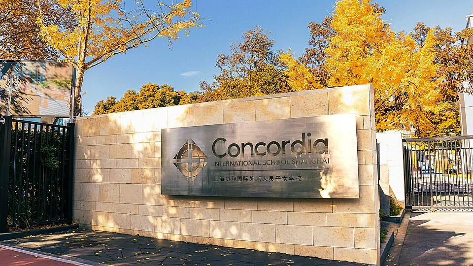

콘코디아 인터내셔널 스쿨 상하이 정문 교명 표지석 · 사진: 176558814wzc / Wikimedia Commons, CC BY-SA 4.0
콘코디아 인터내셔널 스쿨 상하이(Concordia International School Shanghai) — 푸둥 진차오 미국식 AP, 프로젝트형 수업에서 점수 지키는 법
1. 콘코디아 인터내셔널 스쿨 상하이는 어떤 학교인가
콘코디아 인터내셔널 스쿨 상하이는 1998년 개교로 알려진 사립 국제학교입니다.
· 캠퍼스 — 상하이 푸둥신구 진차오(金桥). 외국인 거주 단지가 모여 있는 국제 커뮤니티 지역입니다.
· 학년 — 유치부(프리스쿨)부터 G12까지 한 캠퍼스에서 운영하는 통학형 남녀공학입니다.
· 교육과정 — 미국식. 고학년에는 AP(Advanced Placement) 과목이 개설되는 것으로 알려져 있습니다.
· 응용학습(Applied Learning) — AP와 함께 실제 문제를 다루는 프로젝트형 수업을 강조하고, 코딩·로보틱스·3D 프린팅 등 제작 공간을 갖춘 것으로 알려져 있습니다.
· 중국어 — 유치부부터 G12까지 수준별 중국어(보통화) 프로그램이 있는 것으로 알려져 있습니다.
상하이에서 한국 가정이 자주 비교하는 미국식 두 학교를 나란히 놓으면 이렇습니다.
| 구분 | 콘코디아 상하이 | 상하이 아메리칸 스쿨 |
|---|---|---|
| 캠퍼스 | 푸둥 진차오 1곳 | 푸시·푸둥 2곳 |
| 고학년 과정 | 미국식 + AP | 미국식 + AP·IB 디플로마 |
| 수업 성격 | 응용학습(프로젝트형) 강조 | 트랙 선택 폭이 넓음 |
| 한국 학생 관문 | 루브릭 채점 과제·발표 | AP·IB 트랙 결정 |
※ 개설 과목·학년 구분·모집 일정은 바뀔 수 있습니다. 학교 요강을 직접 확인하세요. 학비·정원·합격률 등 변동 수치는 이 글에서 다루지 않습니다.
2. 한국(주재원) 학생이 겪는 어려움
· 시험은 잘 보는데 성적표가 기대보다 낮다. 프로젝트형 수업은 결과물뿐 아니라 계획서·중간 점검·발표·성찰문까지 루브릭(채점 기준표)으로 나눠 채점합니다. 한국식으로 “최종 결과만 잘 내면 된다”고 생각하면 과정 점수에서 깎입니다.
· 말로 설명하는 비중이 크다. 발표와 토론, 팀 과제 역할 설명이 많아, 영어 말하기가 막 올라오는 시기의 아이는 아는 것보다 낮게 평가받기 쉽습니다.
· AP는 G10~G11에 갑자기 무거워진다. 중학교 때 프로젝트 위주로 지내다가 AP 과목을 들어가면 시간 안에 푸는 객관식과 서술형(FRQ)이라는 전혀 다른 방식에 적응해야 합니다.
· 중국어가 한 과목 더 붙는다. 수준별이라 처음부터 따라갈 수는 있지만, 영어 과목이 흔들리는 시기에 중국어까지 겹치면 시간 배분이 무너지기 쉽습니다.
3. 그래서 이렇게 준비합니다
📋 루브릭을 먼저 읽는 습관 — 과제 받은 날 10분
과제가 나오면 결과물부터 만들지 말고 루브릭의 최상위 칸 문장을 먼저 한국어로 풀어 봅니다. “분석한다”, “근거를 든다”, “과정을 기록한다” 같은 동사가 곧 채점 항목입니다. 이 10분이 과정 점수를 지켜 줍니다. 성적표의 기준표 표기를 읽는 법은 국제학교 성적표 읽는 법에 따로 정리했습니다.
📖 영어과외 — 발표문과 성찰문 쓰기
프로젝트형 수업에서 한국 학생이 가장 약한 글은 성찰문(reflection)입니다. “재미있었다”로 끝나지 않게, 무엇을 시도했고 → 무엇이 안 됐고 → 다음에 무엇을 바꿀지 세 문단 틀을 연습합니다. 발표는 1분 요약문을 먼저 쓰고 소리 내어 읽는 연습부터 합니다. (→ 국제학교 영어 공부법 · 주재원 자녀 영어과외)
📐 수학과외 — G8~G9에 AP 방식으로 한 번 바꿔 두기
알지브라·지오메트리를 튼튼히 하면서, G9 무렵부터는 시간 재고 풀기와 풀이 과정을 영어 문장으로 쓰기를 섞습니다. AP 수학·과학의 서술형은 답보다 과정의 설명에 배점이 크기 때문입니다. (→ 알지브라 공부법 · AP 과목 선택 가이드)
🀄 중국어 — 목표를 “유지”로 정하기
한국 학생에게 중국어는 수준별 반에서 꾸준히 유지하는 것이 현실적인 목표입니다. 영어 과목이 안정될 때까지는 중국어 선행보다 숙제를 제때 내는 것을 우선하시길 권합니다.
4. 상하이의 강점 — 한 시간 차이 화상과외
상하이는 한국보다 1시간 늦습니다. 한국 저녁 시간이 상하이 방과 후와 자연스럽게 겹쳐 실시간 화상 1:1을 잡기 편합니다. 특히 루브릭 과제는 과제 안내문과 초안을 화면에 함께 띄워 채점 항목별로 짚는 방식이 효과적입니다. 상하이 생활권 전반의 이야기는 상하이 국제학교 과외와 상하이 수학학원·영어학원 찾기에 정리했습니다.
정리
콘코디아 인터내셔널 스쿨 상하이는 1998년 개교로 알려진 푸둥 진차오의 미국식·AP 학교로, 응용학습(프로젝트형) 수업과 수준별 중국어가 특징입니다. ① 과제 받은 날 루브릭부터 읽기 ② 성찰문·발표문 틀 만들기 ③ G8~G9에 수학을 AP 방식(시간·서술)으로 전환 ④ 중국어는 유지 목표 — 이 순서를 한 시간 차이 화상과외로 관리하시면 됩니다. 30분 무료 상담으로 우리 아이 학년부터 점검해 보세요.